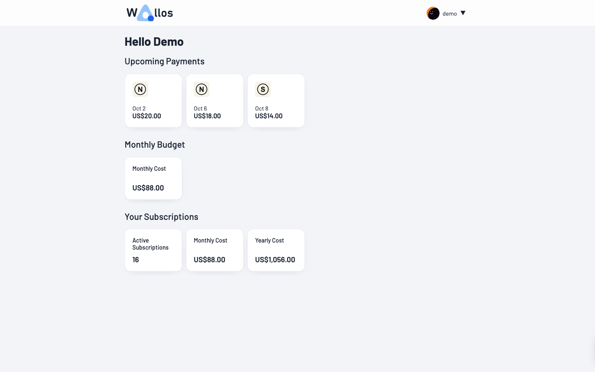
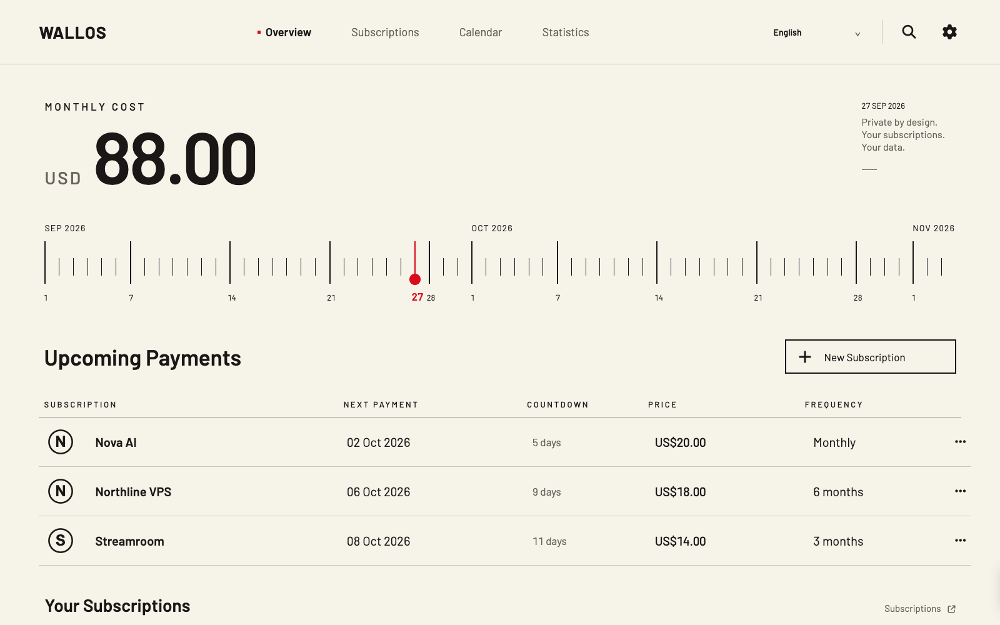
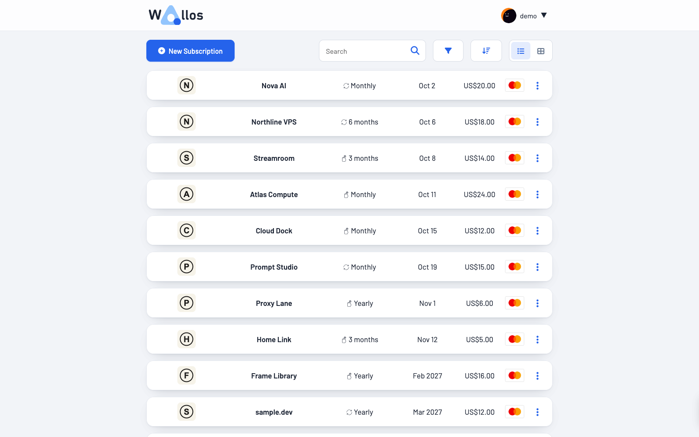
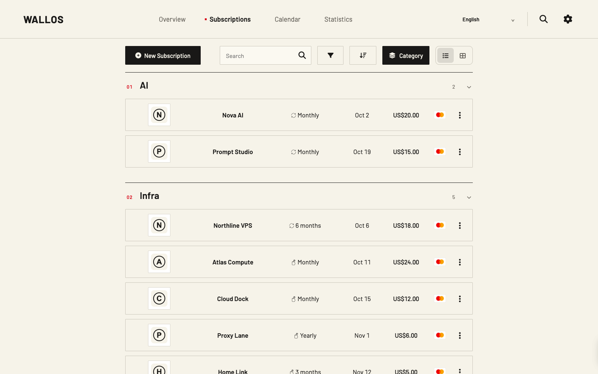
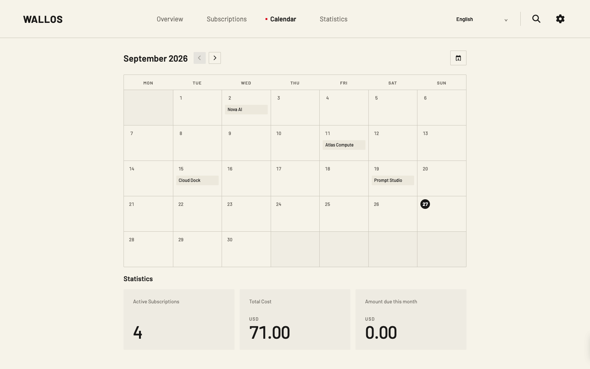
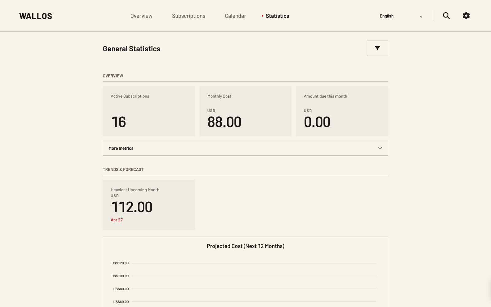
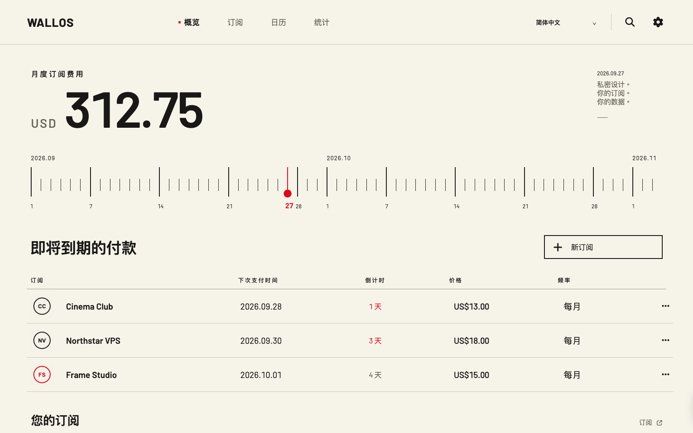
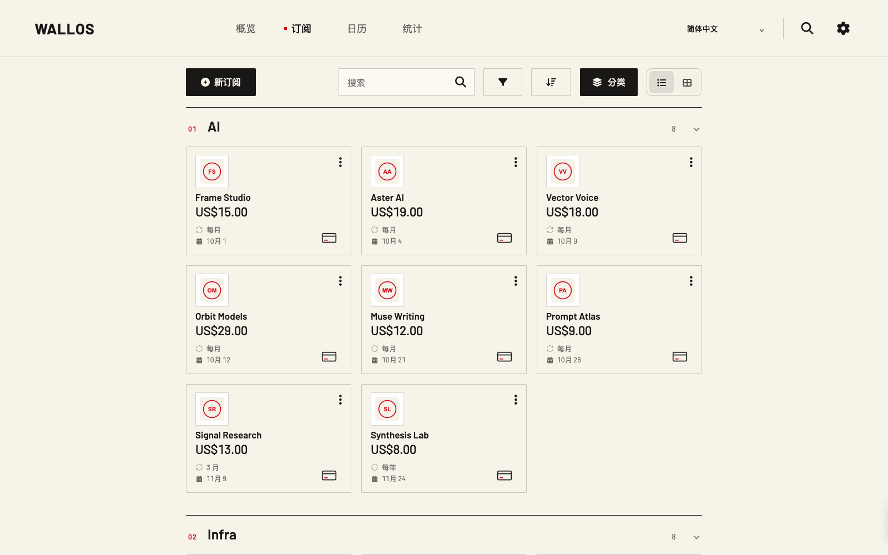

Overview
Cost, timeline, upcoming payments.
A quieter way to see what renews.
A precise interface for Wallos.




Cost, timeline, upcoming payments.

Renewals in their time and place.

Numbers with a calmer hierarchy.

Recurring spend leads the page without competing cards.
Fine calibration marks make the next dates tangible.
Payments and countdowns sit in a precise ledger.
AI, Infra, Domains and Media reflect how services are used.
Service marks share one visual scale and shape.
Search, sort, filter and detail stay in the real Wallos workflow.

An instrument-inspired desktop language for the subscriptions you keep going.
Large totals; quieter supporting data.
Dates expressed as a deliberate dial.
AI, Infra, Domains and Media in one ledger.
Red is reserved for focus and urgency.
WALLOS
DIAL.